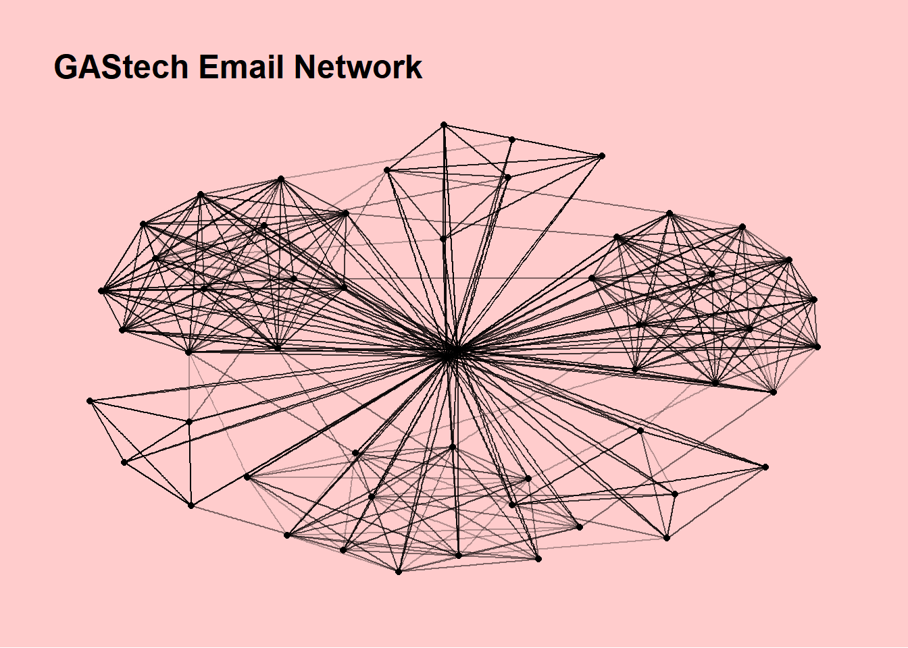
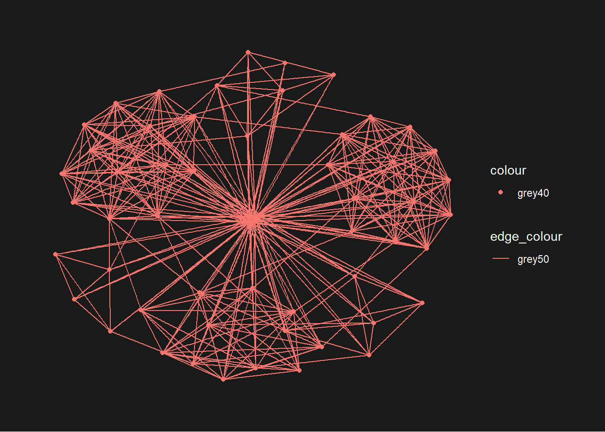
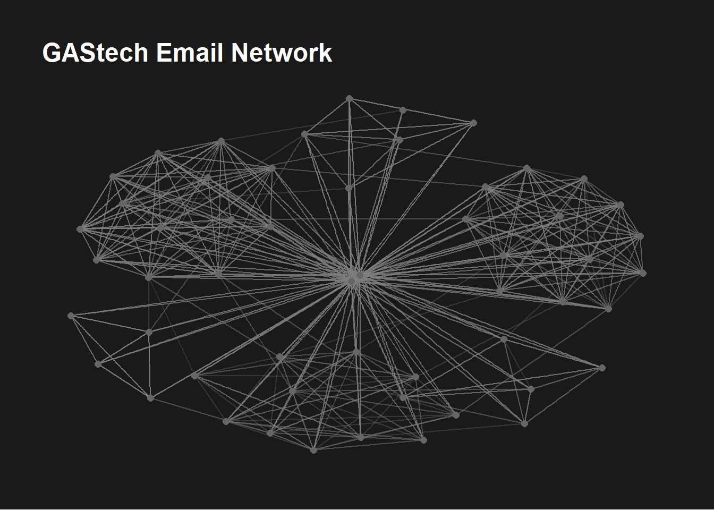
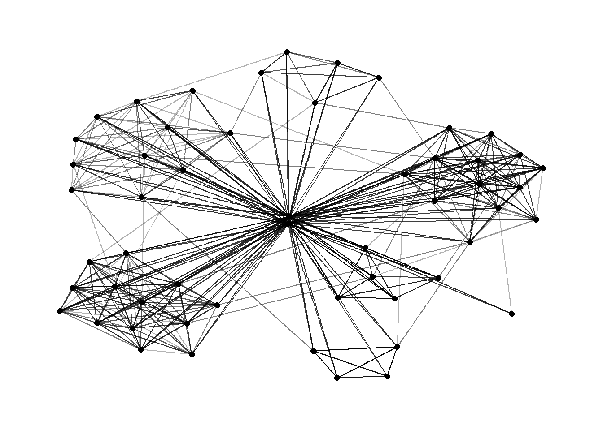
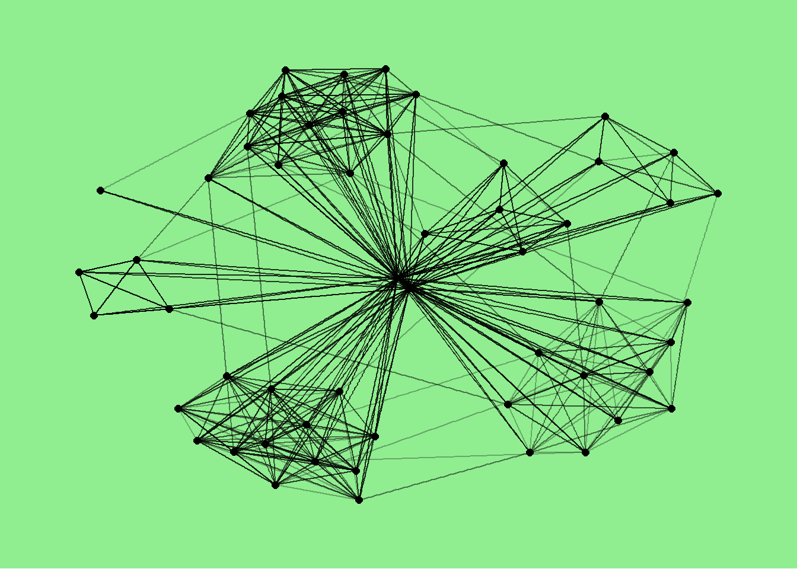
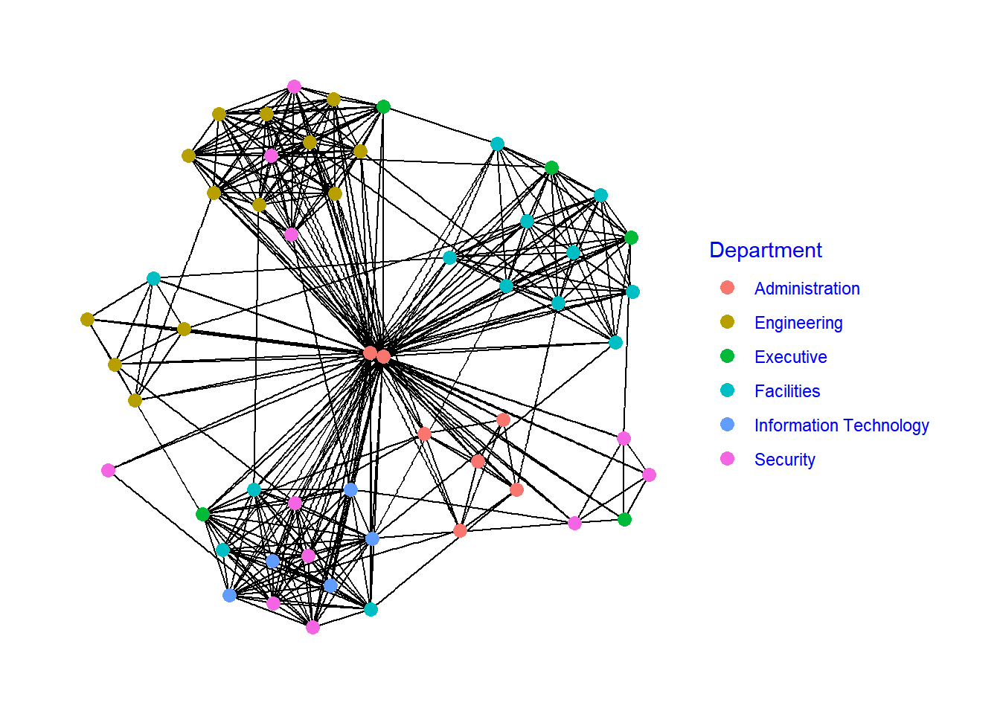
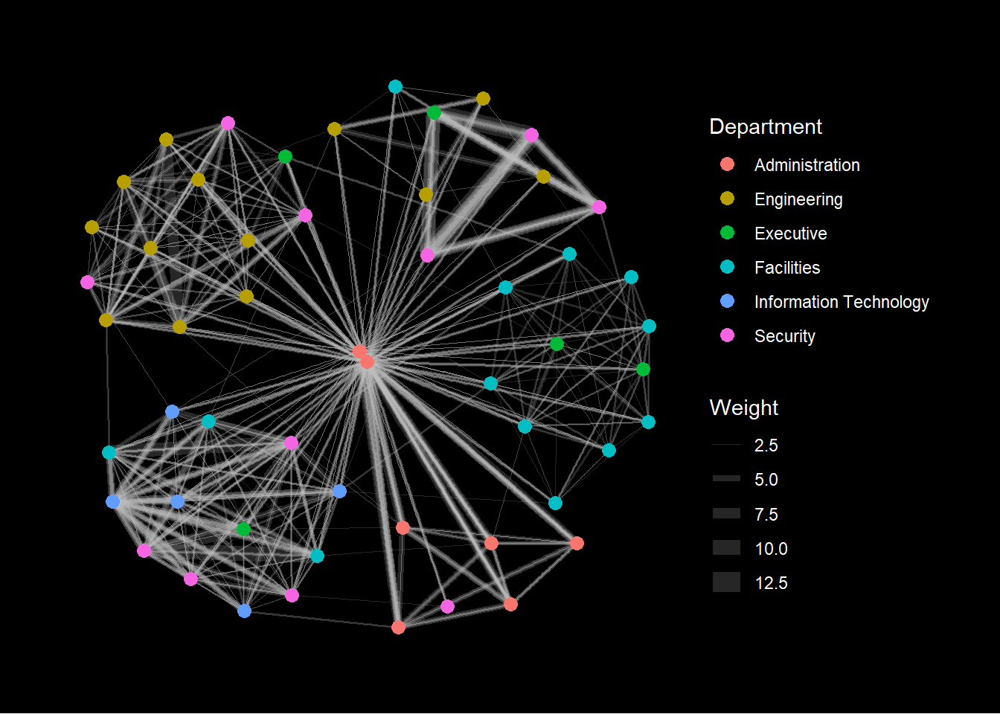

pacman::p_load(igraph, tidygraph, ggraph,
visNetwork, lubridate, clock,
tidyverse, graphlayouts,
concaveman, ggforce)09 Modelling, Visualising and Analysing Network Data with R
1 Overview
In this hands on exercise, we learn how to model, analyse and visualise network data using R.
By the end of this exercise, we will be able to:
construct graph objects from data frames and manipulate them using functions from dplyr, lubridate, and tidygraph
create network visualisations using functions from the ggraph package
compute network metrics and structural properties using tidygraph
develop more advanced network visualisations by incorporating network metrics into the graph design
build interactive network visualisations using the visNetwork package
2 Getting Started
2.1 Installing and Loading Packages
In this hands on exercise, four R packages for network modelling and visualisation will be installed and loaded. These packages are igraph, tidygraph, ggraph, and visNetwork.
In addition, the tidyverse collection of packages and lubridate, which is designed for handling and manipulating date and time data in R, will also be installed and loaded.
| Package | Description |
|---|---|
| tidyverse | A collection of R packages for data importing, cleaning, transformation, and visualisation (e.g., readr, dplyr, tidyr, ggplot2). |
| igraph | Creats and analyses graphs and networks. |
| tidygraph | Provides a tidy interface for working with graph and network data in R. |
| visNetwork | Provides an R interface to the vis.js JavaScript library for network visualisation. |
| ggraph | ggplot2 extension for visualising graphs and networks. |
| graphlayouts | Provides additional layout algorithms for network visualisation that are not available in igraph |
| clock | Provides a comprehensive toolkit for working with date and time data in R. |
| lubridate | A Tidyverse package that handles date-time objects |
| concaveman | Offers a very fast algorithm for computing 2D concave hulls from a set of points |
| ggforce | Extends ggplot2 with additional statistical transformations and geometric layers for creating more specialised visualisations. |
3 The Data
The datasets used in this exercise come from an oil exploration and extraction company. One dataset contains node data, while the other contains edge (link) data describing the relationships between nodes.
3.1 The edges data
GAStech-email_edges.csv contains two weeks of email correspondence, including 9,063 emails exchanged among 55 employees.
| source | target | SentDate | SentTime | Subject | MainSubject | sourceLabel | targetLabel |
|---|---|---|---|---|---|---|---|
| 43 | 41 | 6/1/2014 | 08:39:00 | GT-SeismicProcessorPro Bug Report | Work related | Sven.Flecha | Isak.Baza |
| 43 | 40 | 6/1/2014 | 08:39:00 | GT-SeismicProcessorPro Bug Report | Work related | Sven.Flecha | Lucas.Alcazar |
| 44 | 51 | 6/1/2014 | 08:58:00 | Inspection request for site | Work related | Kanon.Herrero | Felix.Resumir |
| 44 | 52 | 6/1/2014 | 08:58:00 | Inspection request for site | Work related | Kanon.Herrero | Hideki.Cocinaro |
| 44 | 53 | 6/1/2014 | 08:58:00 | Inspection request for site | Work related | Kanon.Herrero | Inga.Ferro |
| 44 | 45 | 6/1/2014 | 08:58:00 | Inspection request for site | Work related | Kanon.Herrero | Varja.Lagos |
| 44 | 44 | 6/1/2014 | 08:58:00 | Inspection request for site | Work related | Kanon.Herrero | Kanon.Herrero |
| 44 | 46 | 6/1/2014 | 08:58:00 | Inspection request for site | Work related | Kanon.Herrero | Stenig.Fusil |
| 44 | 48 | 6/1/2014 | 08:58:00 | Inspection request for site | Work related | Kanon.Herrero | Hennie.Osvaldo |
| 44 | 49 | 6/1/2014 | 08:58:00 | Inspection request for site | Work related | Kanon.Herrero | Isia.Vann |
3.2 The nodes data
GAStech_email_nodes.csv contains the names, departments, and job titles of the 55 employees.
| id | label | Department | Title |
|---|---|---|---|
| 1 | Mat.Bramar | Administration | Assistant to CEO |
| 2 | Anda.Ribera | Administration | Assistant to CFO |
| 3 | Rachel.Pantanal | Administration | Assistant to CIO |
| 4 | Linda.Lagos | Administration | Assistant to COO |
| 5 | Ruscella.Mies.Haber | Administration | Assistant to Engineering Group Manager |
| 6 | Carla.Forluniau | Administration | Assistant to IT Group Manager |
| 7 | Cornelia.Lais | Administration | Assistant to Security Group Manager |
| 44 | Kanon.Herrero | Security | Badging Office |
| 45 | Varja.Lagos | Security | Badging Office |
| 46 | Stenig.Fusil | Security | Building Control |
3.3 Importing network data from files
We import GAStech-email_edges.csv and GAStech_email_nodes.csv into RStudio environment by using read_csv() of readr package.
GAStech_nodes <- read_csv("data/GAStech_email_node.csv")
GAStech_edges <- read_csv("data/GAStech_email_edge-v2.csv")3.4 Reviewing the imported data
The code below use glimpse() of **dplyr* to have a review on the data
glimpse(GAStech_edges)Rows: 9,063
Columns: 8
$ source <dbl> 43, 43, 44, 44, 44, 44, 44, 44, 44, 44, 44, 44, 26, 26, 26…
$ target <dbl> 41, 40, 51, 52, 53, 45, 44, 46, 48, 49, 47, 54, 27, 28, 29…
$ SentDate <chr> "6/1/2014", "6/1/2014", "6/1/2014", "6/1/2014", "6/1/2014"…
$ SentTime <time> 08:39:00, 08:39:00, 08:58:00, 08:58:00, 08:58:00, 08:58:0…
$ Subject <chr> "GT-SeismicProcessorPro Bug Report", "GT-SeismicProcessorP…
$ MainSubject <chr> "Work related", "Work related", "Work related", "Work rela…
$ sourceLabel <chr> "Sven.Flecha", "Sven.Flecha", "Kanon.Herrero", "Kanon.Herr…
$ targetLabel <chr> "Isak.Baza", "Lucas.Alcazar", "Felix.Resumir", "Hideki.Coc…
Tip
The output of GAStech_edges shows that SentDate has been read as a character variable instead of a date variable. This needs to be corrected before further analysis, as the SentDate field should be converted to the proper date data type.
3.5 Wrangling time
The code below converts the SentDate values into day month year format and creates a new column called weekday based on the SentDate column. This is done using the dmy() and wday() functions from the lubridate package, with weekday names in ordinal scale and disabled in abbreviated form.
GAStech_edges <- GAStech_edges %>%
mutate(SendDate = dmy(SentDate)) %>%
mutate(Weekday = wday(SentDate,
label = TRUE,abbr = FALSE))3.6 Reviewing the revised date fields
Now we have a quick review on the fields.
glimpse(GAStech_edges)Rows: 9,063
Columns: 10
$ source <dbl> 43, 43, 44, 44, 44, 44, 44, 44, 44, 44, 44, 44, 26, 26, 26…
$ target <dbl> 41, 40, 51, 52, 53, 45, 44, 46, 48, 49, 47, 54, 27, 28, 29…
$ SentDate <chr> "6/1/2014", "6/1/2014", "6/1/2014", "6/1/2014", "6/1/2014"…
$ SentTime <time> 08:39:00, 08:39:00, 08:58:00, 08:58:00, 08:58:00, 08:58:0…
$ Subject <chr> "GT-SeismicProcessorPro Bug Report", "GT-SeismicProcessorP…
$ MainSubject <chr> "Work related", "Work related", "Work related", "Work rela…
$ sourceLabel <chr> "Sven.Flecha", "Sven.Flecha", "Kanon.Herrero", "Kanon.Herr…
$ targetLabel <chr> "Isak.Baza", "Lucas.Alcazar", "Felix.Resumir", "Hideki.Coc…
$ SendDate <date> 2014-01-06, 2014-01-06, 2014-01-06, 2014-01-06, 2014-01-0…
$ Weekday <ord> Friday, Friday, Friday, Friday, Friday, Friday, Friday, Fr…3.7 Wrangling attributes
A closer look at the GAStech_edges data frame shows that it contains individual email flow records, which are not very suitable for visualisation.
To make the data more useful, we will aggregate the records by date, sender, receiver, main subject, and day of the week.
The code blow first filters work related emails, groups the data by source (sender), target (receiver) and weekday (day the email sent), counts the number of emails for each sender receiver weekday combination and stores the results in a new variable called weight, removes emails from themselves, the finally removes grouping so the data can be used normally in later analysis or visualisation.
3.8 Reviewing the revised edges file
Here we review the data again.
glimpse(GAStech_edges_aggregated)Rows: 1,372
Columns: 4
$ source <dbl> 1, 1, 1, 1, 1, 1, 1, 1, 1, 1, 1, 1, 1, 1, 1, 1, 1, 1, 1, 1, 1,…
$ target <dbl> 2, 2, 2, 2, 2, 3, 3, 3, 3, 3, 4, 4, 4, 4, 4, 5, 5, 5, 5, 5, 6,…
$ Weekday <ord> Sunday, Monday, Tuesday, Wednesday, Friday, Sunday, Monday, Tu…
$ Weight <int> 5, 2, 3, 4, 6, 5, 2, 3, 4, 6, 5, 2, 3, 4, 6, 5, 2, 3, 4, 6, 5,…4 Creating Network Objects Using tidygraph
In this section, we learn how to create a graph data model using the tidygraph package. It provides a tidy API for graph and network manipulation. Although network data is not naturally tidy, it can be represented as two tidy tables: one containing node data and the other containing edge data.
The tidygraph package allows users to switch between these two tables and apply familiar dplyr verbs to manipulate them. It also provides access to many graph algorithms whose outputs integrate well within a tidy workflow.
Before getting started, we could read the following two articles:
4.1 The tbl_graph object
The tidygraph package provides two functions for creating network objects:
tbl_graph()creates atbl_graphnetwork object from node and edge data.as_tbl_graph()converts existing network data or objects into atbl_graphnetwork.
The as_tbl_graph() function supports several data formats, including:
- a node data frame and an edge data frame
- data frame, list, or matrix from base R
- igraph objects
- network objects
- dendrogram and hclust objects from stats
- Node objects from data.tree
- phylo and evonet objects from ape
- graphNEL, graphAM, and graphBAM objects from the graph package in Bioconductor
4.2 dplyr verbs in tidygraph
The activate() function in tidygraph is used to switch between the node and edge tables in a tbl_graph object. Any dplyr verbs applied to the tbl_graph will operate on the currently active table.
iris_tree <- iris_tree %>%
activate(nodes) %>%
mutate(Species = ifelse(leaf, as.character(iris$Species)[label], NA)) %>%
activate(edges) %>%
mutate(to_setose = .N()$Species[to] == 'setosa')
iris_treeWhen working with edges, the helper functions can be used to access different parts of the graph:
-
.N()returns the node data -
.E()returns the edge data -
.G()returns the entire tbl_graph object
4.3 Using tbl_graph() to build tidygraph data model
The code below uses tbl_graph() of tidygraph package to build an tidygraph’s network graph data.frame. The aggregated edges dataset is passed to the edges argument, and directed = TRUE specifies that the network is directed, meaning the relationships have a direction (for example, emails sent from a sender to a receiver).
GAStech_graph <- tbl_graph(nodes = GAStech_nodes,
edges = GAStech_edges_aggregated,
directed = TRUE)4.4 Reviewing the output tidygraph’s graph object
Next we have a quick review of the newly built tl_graph object.
GAStech_graph# A tbl_graph: 54 nodes and 1372 edges
#
# A directed multigraph with 1 component
#
# Node Data: 54 × 4 (active)
id label Department Title
<dbl> <chr> <chr> <chr>
1 1 Mat.Bramar Administration Assistant to CEO
2 2 Anda.Ribera Administration Assistant to CFO
3 3 Rachel.Pantanal Administration Assistant to CIO
4 4 Linda.Lagos Administration Assistant to COO
5 5 Ruscella.Mies.Haber Administration Assistant to Engineering Group Mana…
6 6 Carla.Forluniau Administration Assistant to IT Group Manager
7 7 Cornelia.Lais Administration Assistant to Security Group Manager
8 44 Kanon.Herrero Security Badging Office
9 45 Varja.Lagos Security Badging Office
10 46 Stenig.Fusil Security Building Control
# ℹ 44 more rows
#
# Edge Data: 1,372 × 4
from to Weekday Weight
<int> <int> <ord> <int>
1 1 2 Sunday 5
2 1 2 Monday 2
3 1 2 Tuesday 3
# ℹ 1,369 more rowsThe output above shows that GAStech_graph is a tbl_graph` object with 54 nodes** and 4,541 edges.
The command also displays the first ten rows of the node data and the first three rows of the edge data.
It also indicates that the node data is active. In a tbl_graph object, only one tibble (nodes or edges) is active at a time, allowing users to manipulate each table separately.
4.5 Changing the active object
The nodes tibble is activated by default in a tbl_graph object. However, the active table can be changed using the activate() function.
For example, if we want to rearrange the rows in the edges tibble so that edges with the highest weight appear first, we can first activate the edges table and then apply desc() order in arrange() function.
The output below shows the rearranged edge tibble.
GAStech_graph %>%
activate(edges) %>%
arrange(desc(Weight))# A tbl_graph: 54 nodes and 1372 edges
#
# A directed multigraph with 1 component
#
# Edge Data: 1,372 × 4 (active)
from to Weekday Weight
<int> <int> <ord> <int>
1 40 41 Saturday 13
2 41 43 Monday 11
3 35 31 Tuesday 10
4 40 41 Monday 10
5 40 43 Monday 10
6 36 32 Sunday 9
7 40 43 Saturday 9
8 41 40 Monday 9
9 19 15 Wednesday 8
10 35 38 Tuesday 8
# ℹ 1,362 more rows
#
# Node Data: 54 × 4
id label Department Title
<dbl> <chr> <chr> <chr>
1 1 Mat.Bramar Administration Assistant to CEO
2 2 Anda.Ribera Administration Assistant to CFO
3 3 Rachel.Pantanal Administration Assistant to CIO
# ℹ 51 more rows5 Plotting Static Network Graphs with ggraph Package
ggraph is an extension of ggplot2 that allows users to apply familiar ggplot2 concepts when creating network graphs.
A network graph created with ggraph has three main components:
Nodes represent the entities in the network, edges represent the relationships between them, and layouts determine how the nodes and edges are arranged visually in the graph.
For a more detailed explanation of these components, please refer to the relevant ggraph vignettes.
5.1 Plotting a basic network graph
The code chunk below uses ggraph(), geom_edge_link(), and geom_node_point() to plot a network graph using GAStech_graph.
ggraph(GAStech_graph) +
geom_edge_link() +
geom_node_point()
Tip
The basic plotting function is
ggraph(), which takes the network data and the desired layout type as inputs.Since it is built on igraph,
ggraph()can work with either anigraphobject or atbl_graphobject.The function takes “stress” as default layout.
5.2 Changing the default network graph theme
The code below uses theme_graph() to remove the x and y axes.
g <- ggraph(GAStech_graph) +
geom_edge_link(aes()) +
geom_node_point(aes())
g + theme_graph()
th_no_axes() removes axis lines, tick marks and axis labels.
ggraph(GAStech_graph) +
geom_edge_link(alpha = 0.3) +
geom_node_point() +
labs(title = "GAStech Email Network") +
theme_graph(background = scales::alpha("red", 0.2)) +
th_no_axes()
Tip
ggraph provides a ggplot theme called theme_graph(), which is designed for network visualisations. It removes axes, grid lines, and borders, and sets the default font to Arial Narrow (which can be customised).
The theme can be applied in two ways:
- Use
set_graph_style()to apply the style to multiple plots. - Use
theme_graph()within an individual plot.
5.3 Changing the coloring of the plot
We can customise the colouring of edge, node and background by using theme_graph().
g <- ggraph(GAStech_graph) +
geom_edge_link(aes(colour = 'grey50')) +
geom_node_point(aes(colour = 'grey40'))
g + theme_graph(background = 'grey10',
text_colour = 'white')
When a value is placed inside aes(), ggplot assumes it is a mapped variable, not a fixed colour. Even though grey50 is just a string, ggplot treats it as a category, so it automatically creates a legend. Since it thinks it is a categorical variable, it automatically assigns colours from the default ggplot palette, where the first colour is often red.
To actually use the grey colour, we must place it outside aes():
g <- ggraph(GAStech_graph) +
geom_edge_link(colour = "grey50", alpha = 0.3) +
geom_node_point(colour = "grey40", size = 2)
g +
labs(title = "GAStech Email Network") +
theme_graph(background = "grey10",
text_colour = "white")
5.4 Working with ggraph’s layouts
ggraph supports many commonly used network layouts, including star, circle, nicely (default), dh, gem, graphopt, grid, mds, sphere, randomly, fr, kk, drl, and lgl.
The figures below and on the right illustrate several layouts supported by ggraph().

5.5 Fruchterman and Reingold layout
The code chunks below will be used to plot the network graph using Fruchterman and Reingold layout. The layout is most widely used force directed layout and a good general purpose network layout.
ggraph(GAStech_graph, layout = "fr") +
geom_edge_link(alpha = 0.3) +
geom_node_point(size = 2) +
theme_graph()
5.6 Nicely layout
The default layout. It automatically selects a suitable layout.
ggraph(GAStech_graph, layout = "nicely") +
geom_edge_link(alpha = 0.3) +
geom_node_point(size = 2) +
theme_graph(background = "lightgreen")
5.7 Modifying network nodes
g <- ggraph(GAStech_graph, layout = "nicely") +
geom_edge_link() +
geom_node_point(aes(colour = Department), size = 3)
g + theme_graph(text_colour = "blue")
Tip
aes(colour = Department)maps node colour to department, so each department gets a different colour.size = 3controls the node size.theme_graph(text_colour = "blue")changes the plot text colour (titles, legend text) to blue.
5.8 Modifying edges
The code below maps the thickness of the edges with the Weight variable.
g <- ggraph(GAStech_graph,
layout = "kk") +
geom_edge_link(aes(width=Weight), colour = "grey",
alpha=0.2) +
scale_edge_width(range = c(0.1, 5)) +
geom_node_point(aes(colour = Department),
size = 3)
g + theme_graph(text_colour = "white",background = "black")
Tip
-geom_edge_link() draws edges as straight lines between the start and end nodes. It can also map visual properties to edge attributes.
-For example, the width argument can map the line thickness to the Weight attribute, and the alpha argument controls the opacity of the edges.
6 Creating Facet Graphs
7 Reference
Kam, Tin Seong (2026). 27: Modelling, Visualising and Analysing Network Data with R, https://r4va.netlify.app/chap27